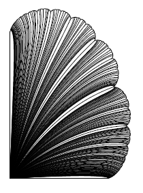
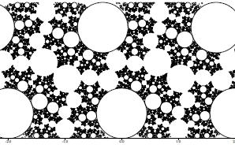
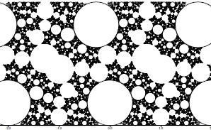
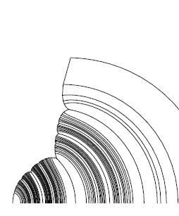

For an excellent overview of Kleinian groups, their limit sets and parameter spaces, see David Wright's page. For related sites, try following the links in Curt McMullens's Gallery.
These pictures were created in an Internet collaboration with John Parker and Ian Redfern. They correspond to pairs of simple closed curves on a surface called the "twice-punctured torus", which can be thought of as the surface of a donut that has (but does not include) two points at infinity.
Click on the pictures to get a detailed PDF version.
|  | One quadrant of a boundary slice of the parameter space. Conceptually this picture is related to the Mandelbrot set, although it corresponds to an entirely different parameter space of dynamics. The space of all possible limit sets of twice-punctured tori is 4-dimensional. This space has a 3-dimensional boundary, and this picture depicts a projection of a 2-dimensional slice of that boundary. Each "ray" corresponds to a homotopy class of simple loops (equivalently, a simple closed geodesic) on the surface. As the ray approaches the boundary, the length of the loop goes to zero and the surface "pinches". At the boundary, the surface has been pinched into a pair of triply punctured spheres, and the corresponding limit set is a circle packing. |
|  | A circle packing corresponding to both curves being pulled tight to zero length on a twice punctured torus (picture by Ian Redfern). |
|  | A near circle packing. One curve has been pulled tight to zero length, the other curve has a non-zero length (picture by Ian Redfern). |
|  | A short Internet collaboration with Caroline Series and Yohei Komori resulted in this crude and partial rendering of one quadrant of the Earle slice, which describes a family of quasifuchsian groups. The bottom left of the graphic is at the origin of the complex plane. The description of the algorithm used makes reference to the terminology of the paper by Series and Komori. |
{kind=link}